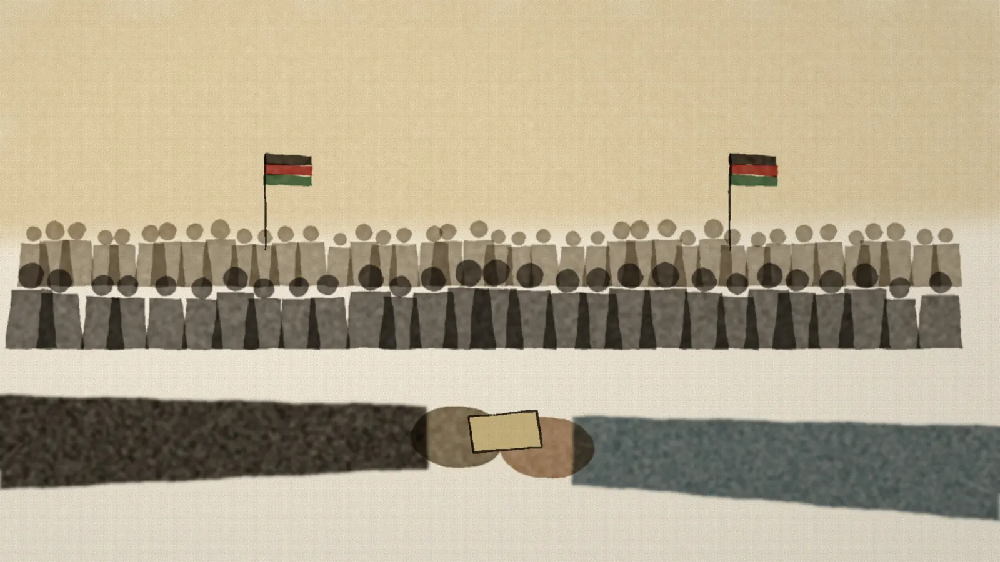

What’s illegal in an election, and how to report it
Lesson 3 of 8

The KES 500 note
Campaign season. Otieno (made up, as always) is at a rally. As the crowd thins, one of the candidate’s people walks along the line and presses a folded KES 500 note into his hand.
Otieno thinks he’s just been paid. He’s actually just taken out a loan, and he’ll repay it for five years.
Let’s do the maths. The numbers are made up. The logic isn’t.
- The candidate gives KES 500 to 20,000 voters. That’s KES 10 million.
- He can’t get it back from his salary. The Salaries and Remuneration Commission sets the pay of every elected leader (Art 230). Leaders don’t set their own pay.
- So the money comes back from where public money is spent: a contract paid at double the price, a “ghost worker” on the payroll, a bursary that goes to the “right” family.
Otieno gets KES 500 once. His ward pays for five years: in a footbridge that cost double, a clinic without medicine, a bursary his niece never got.
Vote buying is a crime, for both people
The Constitution says elections must be free from violence, intimidation, improper influence or corruption (Art 81(e)(ii)).
The Election Offences Act, 2016, section 9 makes it a crime, during an election period, to:
- offer a bribe to make someone vote, or not vote, for a candidate or party, or to attend a rally;
- accept or agree to accept that bribe.
The penalty, on conviction: a fine of up to KES 2 million, up to six years in prison, or both (s.9(3)).
Yes, taking the note is a crime too. And if you’re convicted of an election offence, you can’t register as a voter for five years (Art 83(1)(c)).
Other election crimes (Election Offences Act, 2016)
| It’s a crime to… | Section |
|---|---|
| Use force, threats, “spiritual injury” or tricks to make someone vote a certain way, or to stop them registering or standing | 10 |
| Threaten or hurt someone because of how they voted, or to make them vote a certain way. Up to KES 2 million, 6 years, or both | 11 |
| Use a public officer or the security forces to make people support a candidate | 12 |
| Use public resources (government cars, offices, staff) to campaign, unless a law allows it. Up to KES 2 million, 6 years, or both. IEBC can order the resources impounded | 14 |
| Buy or sell ballot papers, stuff a ballot box, or take election materials out of a polling station | 5 |
| As an employer, refuse workers reasonable time to vote, or cut their pay for it | 18 |
| Break the Electoral Code of Conduct | 20 |
Every candidate and party must follow IEBC’s code of conduct (Art 84). And no political party may use violence or intimidation, keep a militia, engage in bribery, or be founded on an ethnic, religious or regional basis (Art 91(2)).
Who prosecutes? The Director of Public Prosecutions (s.21). Cases should be started within 12 months of the election (s.22). So report early.
Hate speech is not free speech
Your freedom of expression (Art 33(1)) does not cover (Art 33(2)):
- propaganda for war;
- incitement to violence;
- hate speech;
- advocacy of hatred that is ethnic incitement, vilifies others, incites harm, or attacks people for their tribe, religion, sex, disability or another ground listed in Art 27(4).
The National Cohesion and Integration Act, 2008 makes it a crime to use threatening, abusive or insulting words, posts, recordings or shows meant to stir up ethnic hatred, or likely to (section 13). The penalty: up to KES 1 million, up to three years in prison, or both. Words meant to stir up contempt, hatred or violence against a community because of ethnicity or race carry up to KES 1 million, up to five years, or both (section 62).
Is there a limit on campaign spending?
The Constitution gives IEBC the job of regulating how much money candidates and parties may spend (Art 88(4)(i)). For years no binding limit was in force. News reports in August 2026 said IEBC had gazetted campaign spending limits for the 2027 election (Citizen Digital, Capital FM). Check iebc.or.ke for the limit for each seat.
A real case (confirmed by court reports): in July 2026, an IEBC enforcement committee fined Nakuru Town East MP Onesmus Gikaria KES 2.5 million over remarks it found implied inducing voters, during the Ol Kalou by-election campaign. On 8 October 2026 the High Court dismissed his challenge (The Standard; Capital FM). A fine from IEBC is not a criminal conviction.
What you can do
- Refuse the note. If you can’t refuse safely, remember the vote is still secret (Art 38(3)(b)). Nobody can see your ballot.
- Don’t share hate speech, even to complain about it. Screenshot it, then report it. Forwarding it spreads it.
- Collect evidence safely: the date, time and place; photos or video if it’s safe; names of witnesses; vehicle number plates (for government cars at rallies). Don’t confront anyone.
- Report early. Prosecutions should start within 12 months of the election.
- Ask your candidates to say publicly that they won’t buy votes or use hate speech. Write down what they say.
Where to go
| If you see… | Report to |
|---|---|
| Hate speech or a leader stirring up tribe against tribe | NCIC: toll free 1547, SMS 1547, cohesion.go.ke/report |
| Vote buying, violence, intimidation, ballot tampering | The police station nearest you (a crime), and IEBC: (020) 2877000, info@iebc.or.ke |
| A candidate breaking the code of conduct, or government cars and staff used to campaign | IEBC: (020) 2877000, complaint forms |
| A public officer taking or asking for a bribe, or misusing public money | EACC: toll free 1551, report@integrity.go.ke |
| A police officer threatening or beating voters | IPOA: toll free 1559 |
Full details are in WHERE-TO-GO.md.
Quick quiz
- A candidate’s agent gives you KES 500 to vote for him. Who has committed a crime?
- What’s the maximum penalty for vote bribery?
- A county car with a candidate’s posters drives around your ward. Which law and section does that break?
- Is “those people should go back where they came from” protected by freedom of expression?
- Which number do you call to report hate speech?
Answers
- Both the person giving and the person taking (Election Offences Act, s.9(1) and (2)).
- A fine of up to KES 2 million, up to six years in prison, or both (s.9(3)).
- The Election Offences Act, s.14: using public resources to campaign.
- It can be ethnic incitement, which Art 33(2) does not protect, and it may be an offence under the National Cohesion and Integration Act, s.13. Report it to NCIC.
- NCIC, toll free or SMS 1547.